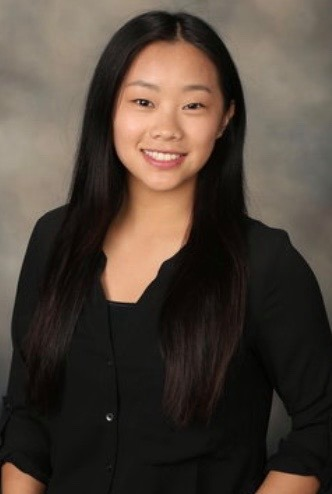
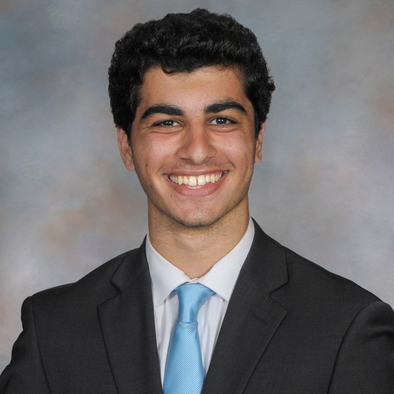
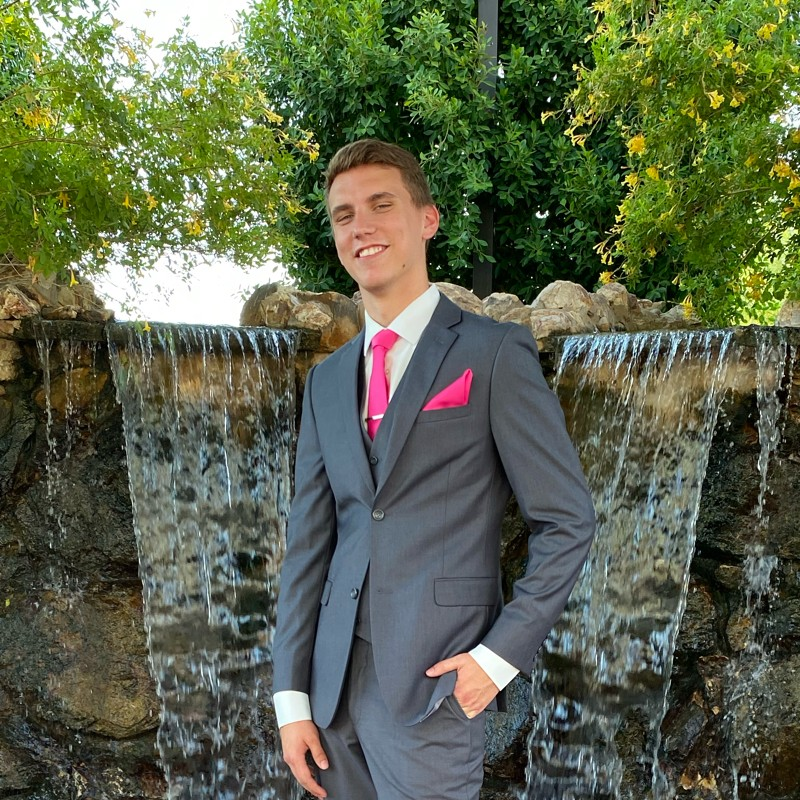

Willie and Willy's Writing Warehouse
Meet the Team!
Ellie Zaczek: Owner

Ellie started Willie and Willy's Writing Warehouse in 2012 after working with two young writers, Willie and Willy. She was so inspired by their talent that she wanted to continue helping more amateur and professional writers develop their careers, and named the company in honor of the two young men that started it all: Willie and Willy.
Rajat Kadian: Product Manager
Rajat joined the team 4 years ago after being a regular consumer of Willie and Willy's Writing Workshop's products and services. As a person who enjoyed writing himself, he wanted to provide the best office supplies and writing services possible to others that shared the same passion for writing as him.
Gregory Krikorian: Creative Director

Greogry was welcomed to Willie and Willy's 5 years ago with a background in art and graphic design. He has since been able to work with many professional and amateur writers around the United States to discuss what kinds of tools they need to produce their best writing. From here, Gregory has learned what new types of services are needed in the market now, and can create aesthetically pleasing products that writers will want to use.
Reed Luedtke: Finance Manager

Reed started with the company 4 years ago with a background in accounting. With his background Reed Luedtke had the desire to apply his number skills to a creative field. With Reed being able to keep the company on top of our financial goals, we are able to stay organized and stay in business for our loyal customers!
Dustin Rabin: Operations Manager
Dustin is our newest addition to the team with him being with the company for 1 year now! He has shown impressive results in his past positions with him being able to optimize our supply chain to keep costs low so we can produce affordable products and services to all of our clients.
More Resources:
- Purdue Owl: Purdue Owl is a highly reputable and valuable source that amateurs and professionals can both use! The link to explore the website is here.
- About us: To learn more about the roots of Willie and Willy's Writing Workshop and what keeps them running, check out the background here!
Contact us!
- Ellie Zaczek: ezaczek@purdue.edu
- Rajat Kadian: rkadian@purdue.edu
- Gregory Krikorian gkrikorian@purdue.edu
- Reed Luedtke: rluedtke@purdue.edu
- Dustin Rabin: drabin@purdue.edu
If you have any questions about the team, E-mail Ellie Zaczek!